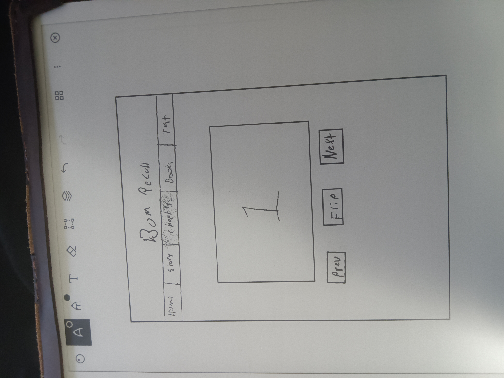

Overview
Purpose
Make a website where you can learn the different Book of Mormon chapters and their main doctrines using a semi-mnemonic device.
Audience
Anyone who wants to have a way to remember what each chapter of the Book of Mormon teaches. Seminary students, Young Adults, and other members of the Church.
Dynamic elements
A button that will change the text on the flip card from oneside showing the Pegs and the story and the otherside showung the Primary Theme/Doctrine and References. Can change what you are learning by choosing a different chapter from a menu.
Branding
Website Logo
Style Guide
Color Palette
Palette URL: https://coolors.co/palette/03045e-0077b6-00b4d8-90e0ef-caf0f8| Primary | Secondary | Accent 1 | Accent 2 | Accent 3 |
|---|---|---|---|---|
| [#03045e] | [#0077b6] | [#00b4d8] | [#90e0ef] | [#caf0f8] |
Pseudocode for your project
Click the flip button, the button has an event listener that will listen for the click and then change the text on the card (if there is time it will have an animation of flipping the card). Click the next button it will switch to the next text, the next button will switch to the next text using an event listener. The previous button will switch to the previous text, the previous button will switch to the previous text using an event listener.
Wireframes
Create wireframes for your project page(s). One for each page and list them here.
Landing page
This will describe what the concept of what the learning is about and does.
[Page 2 if needed]
This will be the page where you can learn the different chapter numbers and what the image associated with each chapter is.
